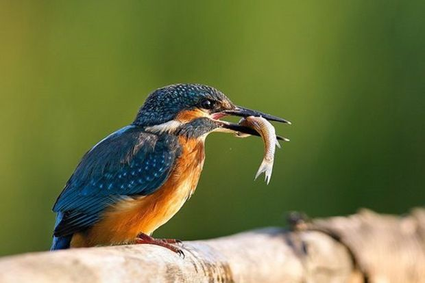

| |
Training Your Bird |
Find out the motivation behind your pet bird’s behavior, and get quick and easy training tips
|
|  |
|
The Basics
|
Training with your pet bird should be fun. Here are some training tips to keep you both happy.
1) Keep your sessions short. Two or three 10-minute sessions every day works best to retain your bird’s attention.
2) Let your pet bird get used to props by leaving them near the cage for a few days. Play with the items to pique your pet bird’s interest.
3) Find a quiet place free of distractions to work together. Keep the cage out of sight, so your pet bird’s attention is on you during the training session. The exception to this rule is a frightened or insecure re-homed bird that might need to see its cage for reassurance.
4) Find a special reward that you only give to your pet bird during training. A food reward should be something small and easily consumed within a few seconds. Or, if your bird enjoys praise or a head scratch, offer these instead of food.
5) Train at the same time every day, so your pet bird can look forward to your new routine together.
6) Keep it positive and offer lots of praise if your pet bird gets even part of the trick or training correct. |
|
| |
| |
| |
| |
Basic Commands
|
|
A few basic behaviors that every companion bird should know are:
Step Up Command: The most important behavior you can teach your bird is the Step-up command, in which your bird reliably steps onto your finger, wrist or onto a hand-held perch. Your bird should automatically offer a foot when you say "Step up” (or whatever cue you use) while you simultaneously offer the hand or perch.
A reliable step up makes it easier to retrieve your bird in an inconvenient or even dangerous situation. It also ensures that other people can work with or retrieve the bird without either party feeling nervous or threatened.
To get your bird stepping up, gently offer your wrist, finger or perch at the spot where your bird’s abdomen meets the top of its legs, and give the cue, "Step up.” Most birds will naturally raise a foot to step onto the offered object. Praise and reward the bird, and then repeat the step up a few times.
Keep your hand or wrist steady, so your bird feels confident stepping onto it.
Step-Down Command: You can also train your bird to step down onto a playgym or its cage. If your bird likes hanging out with you, you’ll have to make it worth its while to step down.
Contact Call: You are your bird’s flock, so naturally it wants to keep track of where you are. Teach your bird a special whistle, word or phrase to use when it wants you to respond. If taught correctly, this contact call can replace that ear-piercing shriek that your bird likes to use when you leave the room.
If your bird has already learned that screaming seems to make you reappear or respond (i.e. yell or admonish), it will take much more persistence and patience to change the behavior.
To teach your bird a contact call, use a consistent phrase – for example, "Be right back” – each time that you leave the room. Call frequently to your bird while you are out of sight. This will let it know that you are nearby.
If your bird makes the desired contact call, respond immediately by either calling in return or poking your head into the room. Do not respond when your bird is screaming.
Consistency is crucial in this training. It might not seem like such a bad idea to occasionally respond to your bird’s screams, but resist the urge. You’ll be rewarded later on. |
|
Other Useful Training Behaviors
|
-
Recall: This extension of the Step-up response is essential for flighted birds, but is also important even for wing-trimmed birds. Praise and reward your bird for approaching you to Step up.
-
Bite a target stick: Many experienced avian trainers recommend that the first thing you teach your pet bird in a training program is to bite the end of a chopstick or other small, hand-held stick (not a perch). Chances are, your pet bird will bite the target stick when it is presented. If you keep praising and rewarding the behavior, your pet bird will quickly notice that it receives attention when it does so and will be glad to bite the target stick.
Once your pet bird has the idea that biting the stick brings praise, you can then use the stick as a tool for teaching other behaviors, such as walking or flying to get the stick or climbing a ladder to reach the stick. This can, in turn, be used to teach the pet bird to walk or fly to you when you hold the stick, or to climb a ladder in order to ring a bell.
-
Other fun ideas: Relatively simple tricks include teaching your pet bird to ride a small wagon; wave "Hello” or give a "high four,” or tap a mirror in response to a cue (such as "Who’s a pretty bird?”).
|
|
Common Training Mistakes To Avoid
|
|
-
Prevent biting from becoming a habit by not letting bites happen in the first place. Keep your hands out of beak range, and your bird will be less tempted to aim for them.
-
Don’t be intimidated. If your bird is acting aggressively, stand nearby until it calms down. When it is calm, you can leave. Now your bird knows that aggressive behavior gets it nowhere.
-
Don’t expect your bird to be ringing bells on command immediately after one or two training sessions. Your bird will learn best if you continue to reward and encourage it with each small step it takes in your training sessions.
|
|
|
|